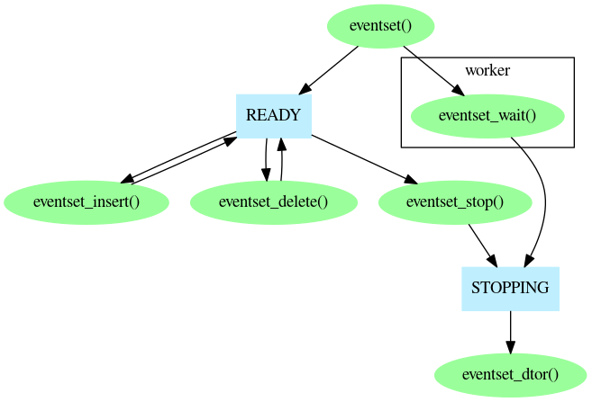

The EVENTSET structure provides the ability to manipulate multiple events as a single object.
This EVENTSET mechanism defines two kinds of object, EVENTSET and ACTIVE_JOB. The internals of EVENTSET are private: EVENTSETs must be created, destroyed and manipulated entirely by the functions listed below, without any knowledge of its internal structure. On the other hand, ACTIVE_JOB is a structure whose fields you must fill in by hand.
Each eventset must be initialised before use by calling
eventset().
For each eventset, you have to create one extra thread, which
we will refer to as the worker thread.
The worker thread doesn't have to do
very much. In fact, it could do as little as call
eventset_wait().
But it does have to exist, and to do at least that. No other thread may
can call eventset_wait()
on the same eventset object.
In principle, the worker thread could be the thread
which calls eventset()
but other threads must refer to the EVENTSET in a thread-safe
manner and, since the EVENTSET itself provides thread-safety
once constructed, it's much easier to create it before creating the
worker thread.
Once the preparation has been done, you can call these functions:
Call eventset_insert()
for each event you want to handle.
When an EVENTSET is to be destroyed,
eventset_dtor() must be
called. This function must not be called until the worker
thread has returned from the call to
eventset_wait(). You tell the
worker thread to do this by calling
eventset_stop(), but this
function does not wait for the worker thread (this
allows you to call it from the worker thread itself),
so you need to guarantee that
eventset_wait()
has returned (for example, by calling pthread_join()) before
destroying the eventset.
The order in which functions must be called is illustrated in this diagram:
